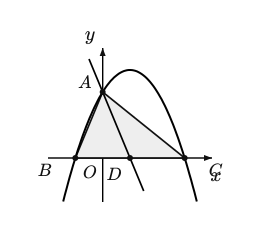

12.5점그림은 y=−x2+2x+3\displaystyle y=-x^2+2x+3y=−x2+2x+3의 그래프이다. A\displaystyle \mathrm{A}A는 y\displaystyle yy축과 만나는 점이고, B,C\displaystyle B,CB,C는 왼쪽부터 차례로 x\displaystyle xx축과 만나는 점이다. A\displaystyle \mathrm{A}A를 지나는 직선 ℓ:y=mx+n\displaystyle \ell:y=mx+nℓ:y=mx+n이 삼각형 ABC\displaystyle \mathrm{ABC}ABC의 넓이를 이등분한다. D\displaystyle \mathrm{D}D를 직선 ℓ\displaystyle \ellℓ과 선분 BC\displaystyle \mathrm{BC}BC의 교점이라 할 때, 검산 기록 (D\displaystyle \mathrm{D}D의 x\displaystyle xx좌표, m\displaystyle mm, n\displaystyle nn)으로 옳은 것은?①(1,3,3)\displaystyle (1,3,3)(1,3,3)②(1,−3,3)\displaystyle (1,-3,3)(1,−3,3)③(2,−3,3)\displaystyle (2,-3,3)(2,−3,3)④(1,−3,−3)\displaystyle (1,-3,-3)(1,−3,−3)⑤(0,−3,3)\displaystyle (0,-3,3)(0,−3,3)②−x2+2x+3=−(x−3)(x+1)\displaystyle -x^2+2x+3=-(x-3)(x+1)−x2+2x+3=−(x−3)(x+1)이므로 B=(−1,0)\displaystyle B=(-1,0)B=(−1,0), C=(3,0)\displaystyle C=(3,0)C=(3,0)이다. x=0\displaystyle x=0x=0을 대입하면 A=(0,3)\displaystyle A=(0,3)A=(0,3)이다.삼각형 ABD\displaystyle \mathrm{ABD}ABD와 ADC\displaystyle \mathrm{ADC}ADC는 밑변이 같은 직선 BC\displaystyle \mathrm{BC}BC 위에 있고 높이가 같으므로 넓이가 같으려면 BD‾=DC‾\displaystyle \overline{\mathrm{BD}}=\overline{\mathrm{DC}}BD=DC여야 한다. 따라서 D\displaystyle \mathrm{D}D는 BC\displaystyle \mathrm{BC}BC의 중점이고 D=(1,0)\displaystyle D=(1,0)D=(1,0)이다.직선은 A=(0,3)\displaystyle A=(0,3)A=(0,3)을 지나므로 n=3\displaystyle n=3n=3이다. D=(1,0)\displaystyle D=(1,0)D=(1,0)도 지나므로 0=m+3\displaystyle 0=m+30=m+3에서 m=−3\displaystyle m=-3m=−3이다. 기록은 (1,−3,3)\displaystyle (1,-3,3)(1,−3,3)이며 정답은 ②이다.